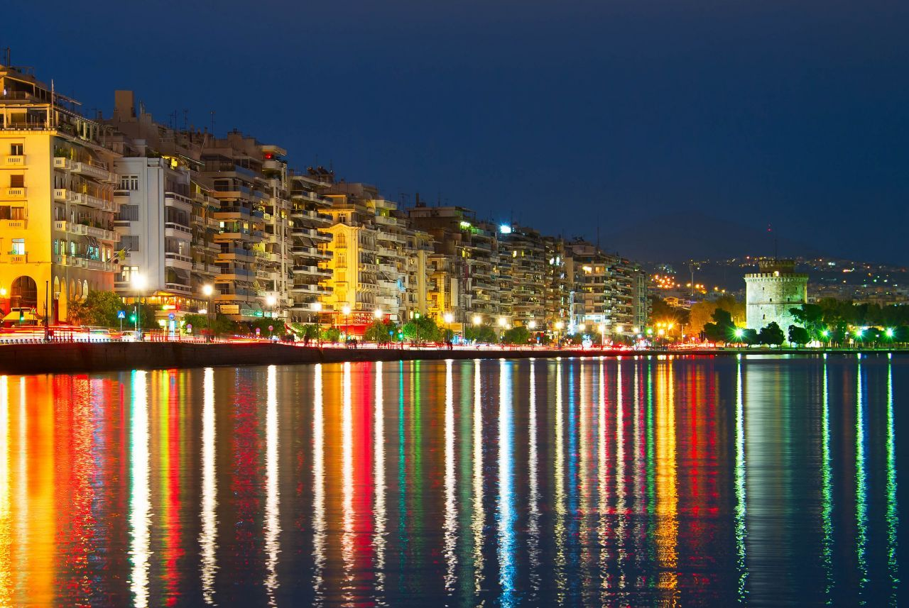
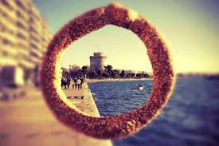
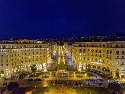

Δεν είναι δύσκολο να καταλάβει κάνεις ότι ο καφές είναι μία από τις μεγαλύτερες απολαύσεις
για τους Έλληνες.
Αφιερώστε όσο χρόνο θεωρείτε εσείς αρκετό και απολαύστε τον καφέ σας στην Θεσσαλονίκη.
Σύντομα μπορεί ο καθένας να καταλάβει ότι ο «Καφές» είναι το μέρος της συνεύρεσης,
η ευχαρίστηση της επαφής με φίλους και γνωστούς που έχουν όρεξη για συζήτηση και επικοινωνία
παρά το ρόφημα αυτό καθεαυτό.
Η Θεσσαλονίκη είναι ένας παράδεισος για τους λάτρεις του καφέ!
Μπορείτε να βρείτε τόσο παραδοσιακούς προορισμούς, όσο και περισσότερο σύγχρονες
καφετέριες με ξεχωριστό design κ άποψη.
Νυχτερινή ζωή

Νυχτερινή ζωή
Η νυχτερινή ζωή στη Θεσσαλονίκη είναι εξίσου έντονη – ίσως και περισσότερο –
από την καθημερινότητα αυτής της πόλης. Εδώ η διασκέδαση δεν σταματάει ποτέ και όσοι
μένουν στην συμπρωτεύουσα ή την επισκέπτονται αναφέρουν ότι η Θεσσαλονίκη by night είναι… εμπειρία!
Πάμε να κάνουμε και εμείς μια τσάρκα για ποτό στα καλύτερα μπαρ της!
Γαστρονομία

Γαστρονομία
Ένα σταυροδρόμι γεύσεων, μία γαστρονομική μητρόπολη, στην οποία θρησκείες και κουλτούρες, της προσέθεσαν.
Οι μεγάλες αγορές του Μοδιάνο και του Καπάνι παρουσιάζουν δίπλα δίπλα όλες τις γαστρονομικές συνήθειες της πόλης.
Πληθώρα από ουζερί και τοπικά εστιατόρια είναι διάσπαρτα σε όλη την πόλη με το μυδοπίλαφο, τα θαλασσινά, τα κεφτεδάκια,
τις σαλάτες με σουσάμι και ρόδι, τα γεμιστά λαχανικά, τα πιάτα με δυόσμο, άνιθο και μαϊντανό να κυριαρχούν,
τον μάραθο, την ματζουράνα και το θρούμπι να ακολουθούν.
Ο πατσάς από την άλλη κυριαρχεί ιδιαίτερα τις μεταμεσονύκτιες ώρες
και η μπουγάτσα τις πρωϊνές, ενώ το μοναδικό κουλούρι Θεσσαλονίκης
μπορεί να εντοπιστεί μαζί με το σαλέπι το χειμώνα παντού στην πόλη από το πρωϊ μέχρι το βράδυ.
Πολιτισμός

Πολιτισμός
Πολιτιστική πρωτεύουσα της Ευρώπης το 1997, η Θεσσαλονίκη ήταν και είναι μια πόλη με έντονη πολιτιστική δραστηριότητα.
Όπως μαρτυρούν τα δεκάδες μουσεία, θέατρα, οι πολυχώροι τέχνης, το Μέγαρο Μουσικής και η μουσική της κληρονονομιά,
η Θεσσαλονίκη παράγει πολιτισμό έχοντας ένα ανήσυχο έμψυχο δυναμικό, τους κατοίκους της, που πρωτοπορούν στην πολιτιστική
κίνηση της Ελλάδας. Αναζητείστε και γνωρίστε χώρους και ανθρώπους και γιατί όχι, γίνετε κι εσείς κομμάτι αυτής της δημιουργικότητας!